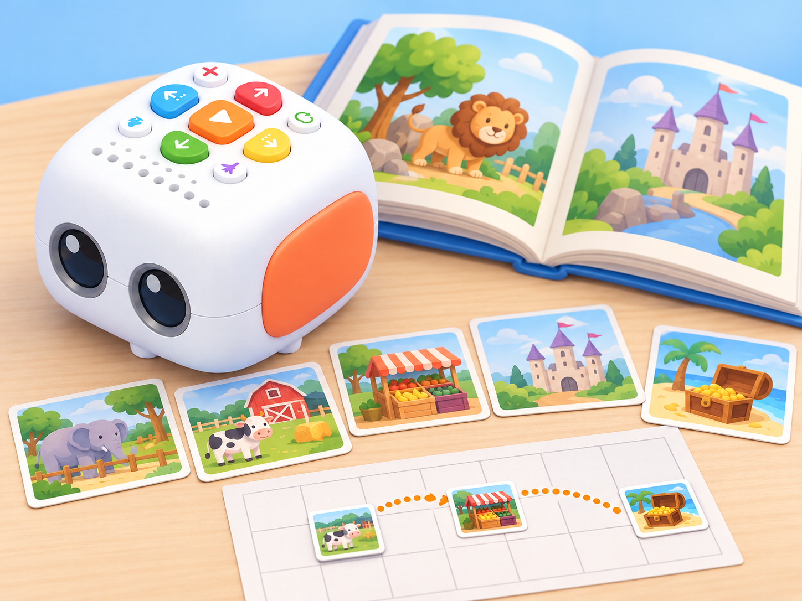
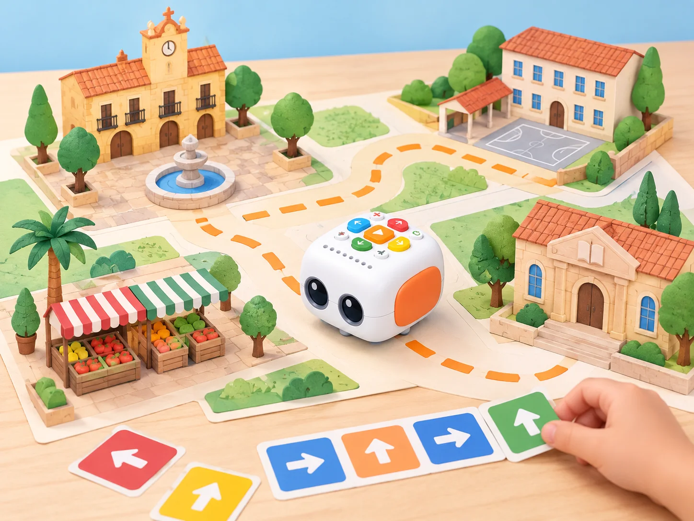
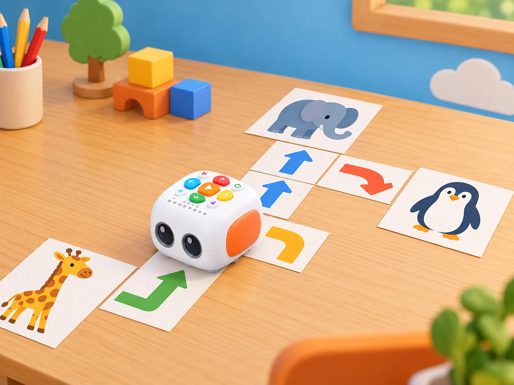
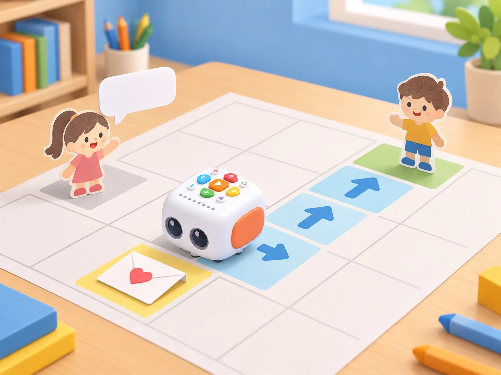
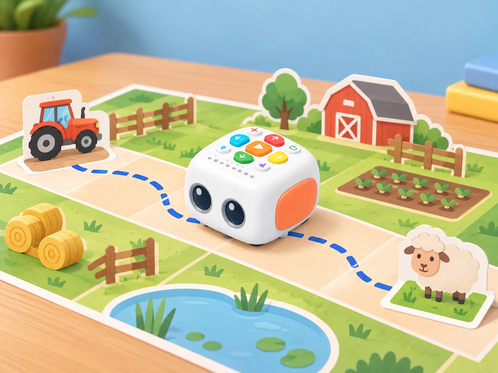
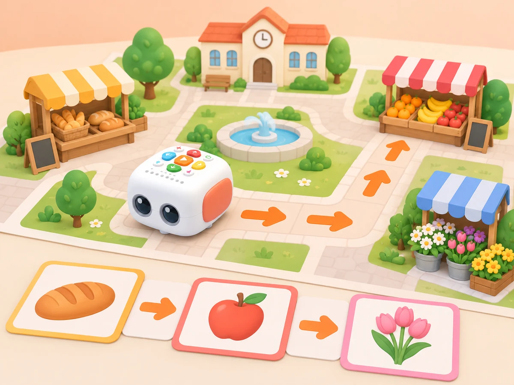
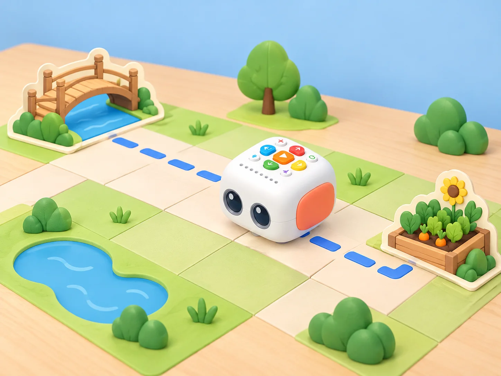
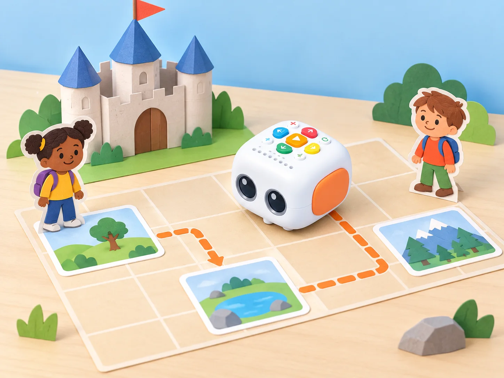
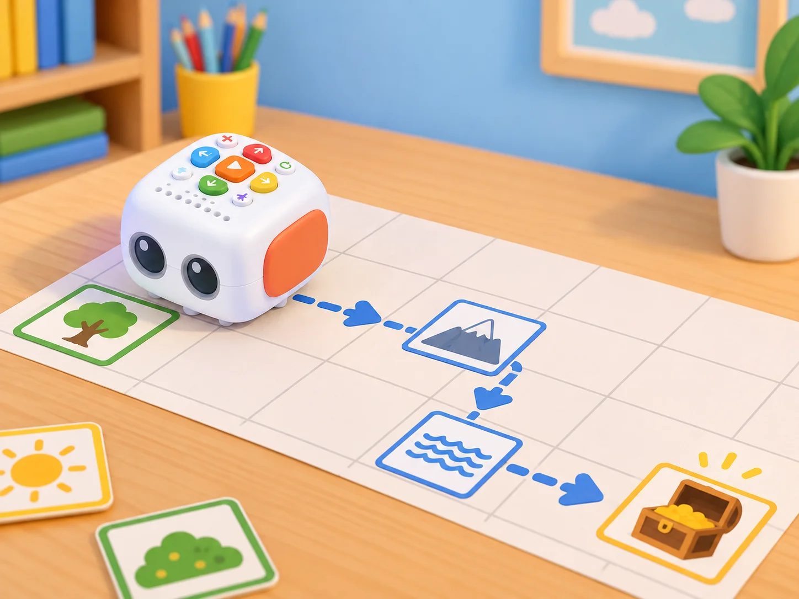
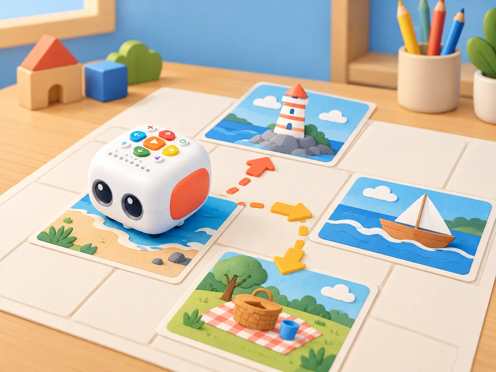

Missions de comunitat amb Tale-Bot
🏷️ Relats i serveis comunitaris
🌱 Situació, repte i intenció
alterneu els rols i permeteu explicar el relat amb paraules, pictogrames o una seqüència de targetes. Abans de cada repte, carregueu Tale-Bot, comproveu la versió del robot i prepareu una taula o terra nets i plans. Les històries i mapes d’aquesta adaptació són propis; useu adhesius OID o funcions de l’Activity Box només quan el centre en tinga i els haja verificat.
🎯 Aprenentatges i vocabulari
- Planificar una ruta amb diverses parades i un relat que es puga modificar.
- Usar ordres i bucles per representar un servei comunitari en un mapa fictici.
- Provar la seqüència, localitzar una ambigüitat i revisar les instruccions en equip.
- Comunicar la missió amb destinacions inventades, sense adreces ni dades de persones reals.
🧰 Materials i preparació
Tale-Bot, quadrícula pròpia, icones dibuixades, targetes de personatges i cinta per fixar el mapa. L’enregistrament i el mode de missatge depenen del model Pro; si no hi són, es poden fer servir símbols i narració humana. Els mapes de l’Activity Box no són requisit.
📅 Seqüència didàctica
El meu poble

Fase 1 · Activem i prediem
Trieu una plaça, una escola, un mercat i una biblioteca per al mapa. Predigueu quin ordre de visita ajudarà a contar una història del poble.
Fase 2 · Explorem i construïm
Col·loqueu les quatre destinacions i marqueu un inici. Prepareu targetes de direcció abans d’introduir les ordres en Tale-Bot.
Fase 3 · Expliquem i registrem
En cada parada, conteu una funció del lloc amb dibuix, paraula o pictograma. Registreu l’ordre de les destinacions i el missatge associat.
Fase 4 · Apliquem i millorem
Executeu el recorregut i comproveu les parades. Canvieu una destinació d’ordre i observeu com canvia el relat.
Fase 5 · Comprovem i reflexionem
Visitem un parc zoològic

Fase 1 · Activem i prediem
Escolteu una visita breu narrada per la docent i identifiqueu-ne les parades. Predigueu quines targetes d’animals apareixeran primer i al final.
Fase 2 · Explorem i construïm
Ordeneu les parades en el mapa propi i prepareu la seqüència amb targetes d’ordres. Si hi ha mapa interactiu oficial disponible, compareu-ne els modes d’instruccions, codi i creació.
Fase 3 · Expliquem i registrem
Anoteu l’ordre de les targetes i una dada o observació de cada parada. Diferencieu el que diu la història del que observeu en les imatges.
Fase 4 · Apliquem i millorem
Programeu Tale-Bot perquè repetisca el recorregut. Després canvieu l’ordre dels animals i inventeu una visita alternativa.
Fase 5 · Comprovem i reflexionem
El xicotet missatger

Fase 1 · Activem i prediem
Col·loqueu una icona de sobre i dos personatges en caselles triades a l’atzar. Predigueu quines parades necessita la missió per a portar el missatge.
Fase 2 · Explorem i construïm
Trieu un missatge breu inventat. Graveu-lo només si el model ho permet i hi ha consentiment; altrament, prepareu una targeta escrita o un pictograma.
Fase 3 · Expliquem i registrem
Marqueu l’ordre: punt d’inici, sobre i destinatari. Assageu la narració o lectura del missatge que correspon a cada parada.
Fase 4 · Apliquem i millorem
Programeu Tale-Bot fins al sobre i des d’allí fins al destinatari. Si el trajecte falla, localitzeu la primera ordre incorrecta i repetiu-lo.
Fase 5 · Comprovem i reflexionem
La granja I

Fase 1 · Activem i prediem
Poseu al mapa una icona de tractor i una d’animal. Predigueu quina ordre de parades permetrà visitar-les totes dues.
Fase 2 · Explorem i construïm
Prepareu la seqüència d’ordres fins al tractor i, després, fins a l’animal. Inventeu un missatge amable per a la segona parada.
Fase 3 · Expliquem i registrem
Anoteu l’ordre de les destinacions i el missatge. Si hi ha enregistrament, comproveu el seu ús i demaneu consentiment abans de gravar.
Fase 4 · Apliquem i millorem
Programeu el recorregut i canvieu la posició de les icones per a un segon repte. Ajusteu la ruta a la nova distribució.
Fase 5 · Comprovem i reflexionem
La botiga de queviures
Fase 1 · Activem i prediem
Trieu una llista de compra inventada per la docent i predigueu quantes parades cal fer abans d’arribar a la caixa.
Fase 2 · Explorem i construïm
Col·loqueu els aliments dibuixats i una caixa en el mapa. Prepareu un missatge «Necessite comprar…» amb una gravació consentida si la funció existeix o una targeta de narració.

Fase 3 · Expliquem i registrem
Ordeneu les parades segons la llista i poseu una fitxa al costat del robot en cada producte visitat. Manteniu la llista visible per comprovar què falta.
Fase 4 · Apliquem i millorem
Programeu una sola seqüència per visitar els productes i acabar a la caixa. Si una parada queda fora de l’ordre, reviseu el programa abans de tornar a començar.
Fase 5 · Comprovem i reflexionem
Ruta de patrulla com a conte

Fase 1 · Activem i prediem
Trieu dues icones neutres d’un mapa de joc i imagineu un relat de convivència que les connecte. Predigueu quina parada convé visitar primer.
Fase 2 · Explorem i construïm
Marqueu una ruta que passe per les dues icones i prepareu totes les ordres en una seqüència.
Fase 3 · Expliquem i registrem
Anoteu què ocorre en cada parada i com es relaciona amb la següent. Comproveu que el relat té un inici, un canvi i un final inventats.
Fase 4 · Apliquem i millorem
Programeu Tale-Bot amb un sol programa i proveu el recorregut complet. Si una instrucció altera l’ordre, reviseu-la i torneu a narrar la història.
Fase 5 · Comprovem i reflexionem
La granja II

Fase 1 · Activem i prediem
Col·loqueu icones d’animals i trieu una cançó de granja coneguda o una alternativa creada pel grup. Predigueu quin animal apareixerà primer.
Fase 2 · Explorem i construïm
Escolteu o interpreteu la cançó i anoteu l’ordre en què apareixen els animals. Prepareu una targeta per a cada parada.
Fase 3 · Expliquem i registrem
Compareu la seqüència de targetes amb l’ordre de la cançó. Marqueu quin animal apareix primer, quin al final i quins es repeteixen.
Fase 4 · Apliquem i millorem
Programeu Tale-Bot perquè visite les icones en l’ordre acordat. Reviseu la seqüència si una parada s’ha omés o repetit.
Fase 5 · Comprovem i reflexionem
Una missió cooperativa al castell

Fase 1 · Activem i prediem
Inventeu un conte en què un personatge troba una dificultat i rep ajuda amistosa. Predigueu quines escenes caldrà visitar perquè el relat s’entenga.
Fase 2 · Explorem i construïm
Repartiu les icones del relat en caselles triades a l’atzar, inclosa la persona que rep l’ajuda. Trieu una primera escena i prepareu la ruta per etapes.
Fase 3 · Expliquem i registrem
En cada arribada, retireu la targeta i poseu-la en fila. Registreu la seqüència perquè una altra parella puga reconstruir el conte.
Fase 4 · Apliquem i millorem
Continueu fins a completar el recorregut i arribar al desenllaç. Canvieu qui ajuda o el final mantenint la seqüència per etapes i proveu de nou.
Fase 5 · Comprovem i reflexionem
Cerca del tresor

Fase 1 · Activem i prediem
Prepareu targetes pròpies de cerca i predigueu quina pista caldrà trobar primer i quina indicarà el tresor final.
Fase 2 · Explorem i construïm
Col·loqueu les pistes en ordre aleatori. La primera és el mapa del tresor i l’última el cofre o diamant; trieu la casella d’inici.
Fase 3 · Expliquem i registrem
Planifiqueu el trajecte i retireu cada targeta en arribar-hi, posant-la en fila. Manteniu visible l’ordre de les pistes recollides.
Fase 4 · Apliquem i millorem
Continueu fins al tresor i reconteu la història seguint les pistes. Creeu una segona distribució i reviseu el recorregut.
Fase 5 · Comprovem i reflexionem
El nostre llibre de contes preferit

Fase 1 · Activem i prediem
Escolteu un conte triat per la classe i recordeu-ne les escenes principals. Predigueu quines quatre o cinc targetes basten per a reconstruir-ne l’ordre.
Fase 2 · Explorem i construïm
Dibuixeu targetes originals per als moments clau sense copiar les il·lustracions del llibre. Poseu-les aleatòriament al mapa i prepareu la seqüència narrativa.
Fase 3 · Expliquem i registrem
Anoteu l’ordre correcte i una frase o idea que explique cada moment. Si graveu frases, demaneu consentiment i comproveu la funció del model.
Fase 4 · Apliquem i millorem
Programeu Tale-Bot perquè visite les targetes en ordre. En cada parada, reproduïu una frase gravada si és possible o feu que una persona narre en directe; reviseu l’ordre si el conte no s’entén.
Fase 5 · Comprovem i reflexionem
🧪 Evidències i avaluació
Mapa, seqüència de destinacions, programa, conte col·lectiu, prova amb un segon equip i una revisió del final. Avalueu orientació, ordre, capacitat de relatar i escolta mútua; mai la rapidesa o la interpretació personal d’un infant.
♿ Participació, accessibilitat i seguretat
Permeteu aportar idees per veu, dibuix, pictogrames o selecció de targetes; ningú no ha de representar una experiència personal ni parlar en públic. Les missions es resolen amb destinacions fictícies i no incorporen noms o adreces reals. Repartiu els rols de planificació, programació, observació i relat, i feu torns curts amb el robot.
🔗 Referents i adaptació
Adapta les deu targetes D —My Town, Visit the Zoo, The Little Messenger, Old McDonald’s Farm I/II, Grocery Store, Patrol Car, Saving the Princess, Treasure Hunting i My Favorite Story Book— de les Activity Cards oficials. S’hi conserven les accions centrals de cada fitxa (visita narrada i modes del mapa; sobre i missatge; tractor i enregistrament; llista, recollida i caixa; ruta per dues icones; ordre de la cançó de granja;
seqüència cooperativa d’adhesius; recorregut per pistes fins al mapa del tresor i el cofre, relat per etapes, i conte conegut reconstruït per escenes amb narració opcional en cada parada). Històries, mapes, dades i il·lustracions són originals i contextualitzats.